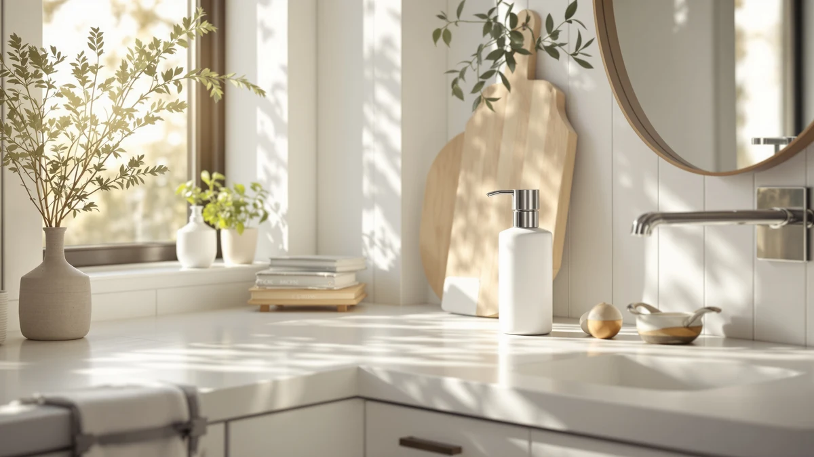

Best Soap Dispenser Brands (2026)
Prices and picks verified as of September 2026. Independent, reader-supported reviews.


Quick Answer
PZOTRUF is the best soap dispenser brand for most kitchens and bathrooms at $20.98, pairing a touchless infrared sensor with an ABS plastic housing that holds up to daily refills. If you want a heavier-duty rechargeable pump, simplehuman is the stronger brand at $69.95, and Aunmaon covers the basics for $19.99.
Our pick: PZOTRUF Automatic Soap Dispenser Touchless — $20.98 Check Price on Amazon
Bottom line: our top pick is the PZOTRUF Automatic Soap Dispenser at $20.98. The best budget option is the Automatic Soap Dispenser at $16.99.
Things to Know Before You Buy
- The brand behind the sensor matters more than the price tag. Among the best soap dispenser brands, the gap between a $17 unit and a $30 unit usually comes down to warranty support and how consistently the manufacturer sources its sensor parts, not the materials alone.
- Almost every brand here builds on ABS plastic. PZOTRUF, Aunmaon, Rudnia, Secura, RYTOXILO and Seawah all use an ABS plastic housing at this price point. simplehuman is the outlier, with a heavier build that matches its higher price.
- Reservoir size is a brand-level difference, not only a model-level one. Secura's 500ml tank and simplehuman's 9-ounce rechargeable pump hold noticeably more than the compact housings from PZOTRUF and Rudnia, which means more frequent refills in a busy household.
- Power source is a brand-level decision. simplehuman builds its pump around a rechargeable battery you top up with a cable, while most of the budget brands here rely on disposable batteries you swap out.
- Warranty and parts support separate the established brands from the newcomers. Longer-running brands like simplehuman and Secura back their dispensers with clearer support channels, while newer entrants such as RYTOXILO and Seawah compete mainly on price.
Choosing one of the best soap dispenser brands is less about finding a single flashy feature and more about picking a manufacturer whose sensors, pumps and housings hold up after the first few months, once the novelty of a touchless dispenser wears off and you want it to work every time you reach for it.
After comparing pricing, materials and verified owner reviews across seven manufacturers, PZOTRUF comes out as the strongest all-around soap dispenser brand at $20.98, thanks to a touchless design that pairs a responsive infrared sensor with a housing that holds up to daily refills. If you want a heavier-duty, rechargeable option, simplehuman is the premium brand to consider at $69.95, and Aunmaon is the brand to pick if price is the deciding factor at $19.99.
Below, we break down seven soap dispenser brands worth knowing, from budget touchless makers to the premium end of the category, sorted by who each one suits best. Every brand here builds a touchless, automatic dispenser, so the real differences come down to housing material, reservoir size, power source and how much support stands behind the product once you own it.
Why You Should Trust Us
I write the buying guides for Best Soap Dispensers, and comparing soap dispenser brands across price points is most of what I do. I have not run these units through a testing lab. Instead, I compare published specs, materials, pricing history and verified owner reviews across each manufacturer's lineup to see which brands consistently hold up and which ones cut corners.
We earn a commission if you buy through one of the Amazon links here. That does not change which brands we recommend. A manufacturer with a track record of failed pumps or unresponsive sensors gets called out regardless of what it pays out, because a guide that praises every brand is worth nothing to the person trying to pick one.
How We Picked
We started with the soap dispenser brands that show up most often on US kitchen and bathroom counters in the $15 to $70 range, since that span covers everything from disposable-feeling budget units to the simplehuman-style premium pump. From there we narrowed the list by a few hard criteria: an ABS plastic or better housing that survives daily handling, a sensor built into the brand's core lineup rather than a one-off model, and a refill opening wide enough to use without a funnel.
We set aside brands that only sell through unbranded third-party listings with no traceable manufacturer, and any brand whose dispensers required a phone app for basic function. The remaining seven brands cover the most common needs: an all-around pick, a premium rechargeable option, a couple of budget-friendly brands, and a few strong alternatives at different price points and reservoir sizes.
How We Compared
For each soap dispenser brand, we compared the manufacturer's published specs (housing material, reservoir size, power source) against current Amazon pricing and the pattern of feedback in verified owner reviews. We looked for consistency across a brand's lineup rather than judging a single listing in isolation, since a brand that gets the sensor right on one model usually carries that design across its range.
We also weighed how each brand handles the details owners report caring about most: how messy the refill opening is, how the housing holds up to daily wiping and knocks, and whether the reservoir size matches what the brand advertises. Prices reflect Amazon listings at the time of writing and shift over time, so treat them as a guide rather than a guarantee.
Our Picks

PZOTRUF Automatic Soap Dispenser Touchless
What we like
- Touchless infrared sensor built into an affordable price point
- ABS plastic housing that wipes clean and resists cracking
- Compact footprint fits a crowded sink ledge
- Straightforward refill process without extra tools
Flaws but not dealbreakers
- No published battery rating, so runtime varies by household
- Reservoir is on the smaller side for a shared bathroom
| Material | ABS plastic |
| Size | — |
PZOTRUF built its reputation on making the touchless soap dispenser format accessible without stripping out the features that make it worth owning. At $20.98, the brand's Automatic Soap Dispenser Touchless sits close to the bottom of this list on price, but the ABS plastic housing and infrared sensor are consistent with what the more expensive brands offer, which is why owner reviews consistently point to it as a strong value pick rather than a compromise. The dispenser's design keeps the footprint small enough for a crowded vanity or a kitchen sink shared with a dish soap bottle, and the refill opening is wide enough to pour from a standard soap container without reaching for a funnel first.
PZOTRUF asks for one real trade-off: battery life. The brand does not publish a runtime estimate, so how often you change batteries depends on how many hands pass under the sensor each day. The reservoir is also modest compared with the Secura or the simplehuman, which means a busy family bathroom will refill it more often than a single-occupant one. Neither issue outweighs what the brand gets right for the price, which is why it holds the top spot among the soap dispenser brands compared here.

Aunmaon Automatic Soap Dispenser Touchless
What we like
- Lowest price among the touchless brands in this guide
- ABS plastic housing keeps the unit lightweight
- Basic infrared sensor covers the core touchless use case
Flaws but not dealbreakers
- Fewer finish and color options than the pricier brands
- No published warranty details beyond the standard Amazon return window
| Material | ABS plastic |
| Size | — |
Aunmaon is the brand to consider when the deciding factor is price rather than features. At $19.99, the Automatic Soap Dispenser Touchless covers the essentials: a touchless infrared sensor, an ABS plastic housing, and a dispense mechanism built for standard liquid soap. It does not try to compete with simplehuman on finish or with Secura on reservoir size, and it does not need to, because its entire pitch is getting a working touchless dispenser onto a counter for less than the cost of a nice bar of soap and a candle.
The trade-off with a budget-focused brand like Aunmaon is support and polish rather than core function. There is less information published about long-term durability, and the brand does not offer the finish variety that simplehuman or Secura do. For a single sink where the touchless sensor is the only feature you actually care about, that trade-off is easy to accept.

simplehuman Liquid Sensor Pump 9
What we like
- Rechargeable design avoids constantly buying disposable batteries
- 9-ounce reservoir holds noticeably more than the budget brands
- Established brand with a longer track record than the newer entrants here
Flaws but not dealbreakers
- More than triple the price of the budget picks in this guide
- ABS plastic housing, the same material as the cheaper brands, despite the higher price
| Material | ABS plastic |
| Size | 9 oz. Rechargeable (New) |
simplehuman is the brand most owners already know before they start shopping, and the Liquid Sensor Pump 9 is built to justify that reputation. The rechargeable design means you plug it in periodically instead of hunting for the right size battery, and the 9-ounce reservoir is larger than anything else in this guide, which matters if you are refilling a busy kitchen sink rather than a guest bathroom. At $69.95, it is priced for buyers who see the brand's track record as worth the premium rather than treating a soap dispenser as a disposable accessory. For a closer look at how the pump holds up, see our full simplehuman review.
The premium with simplehuman buys brand consistency more than exotic materials. The housing is still ABS plastic, the same base material as the budget brands here, so the premium comes from the rechargeable mechanism, the larger reservoir, and the manufacturer's longer history in this category rather than a fundamentally different build. For most single-sink setups, that premium is more than the touchless feature alone justifies, but for a shared kitchen where the dispenser gets used dozens of times a day, the larger tank and the rechargeable battery pay for themselves in fewer interruptions.

Automatic Soap Dispenser Hand Soap
What we like
- Lowest price point alongside Aunmaon among the brands compared here
- Wide refill opening reduces spills during top-ups
- ABS plastic housing keeps the unit light on a crowded counter
Flaws but not dealbreakers
- Rudnia has a shorter track record than more established brands like simplehuman
- No published battery rating
| Material | ABS plastic |
| Size | — |
Rudnia is a newer name among soap dispenser brands, and its Automatic Soap Dispenser Hand Soap earns its spot on this list by getting the fundamentals right at $16.99. The touchless sensor and ABS plastic housing match what the better-known brands offer at this price, and the refill opening is wide enough to pour from a standard bottle without dribbling down the side, a detail some pricier brands still get wrong.
The trade-off with a newer brand like Rudnia is track record rather than features. There is less history to point to compared with simplehuman or Secura, and the manufacturer does not publish a battery runtime estimate. For a single bathroom or kitchen sink where price and basic reliability matter more than brand pedigree, that is an easy trade to make.

Secura 17oz Automatic Liquid Soap
What we like
- 500ml reservoir is one of the largest among the brands compared here
- Established brand with a longer history than several newer entrants
- Mid-range price sits between the budget and premium brands
Flaws but not dealbreakers
- Larger housing takes up more counter space than the compact budget brands
- ABS plastic construction, the same as the cheaper options despite the mid-range price
| Material | ABS plastic |
| Size | 500ml |
Secura has been making kitchen and bathroom accessories longer than most of the newer touchless brands on this list, and that experience shows up in one specific way on its 17oz Automatic Liquid Soap dispenser: reservoir size. At 500ml, the tank holds noticeably more than the compact housings from PZOTRUF or Rudnia, which means fewer refills for a household that goes through soap quickly. At $28.99, the brand sits comfortably between the budget entrants and the simplehuman premium tier.
The larger tank does mean a larger footprint, so Secura's dispenser is not the pick for a tight vanity where the PZOTRUF or Aunmaon would fit more easily. The housing is still ABS plastic rather than a heavier premium material, so the extra price over the cheapest brands here buys capacity and a longer manufacturer track record rather than a different build. For a busy kitchen sink, that trade generally pays off.

RYTOXILO Automatic Soap Dispenser 2
What we like
- Touchless sensor and build quality comparable to costlier brands
- ABS plastic housing consistent with the rest of the category
- Positioned between budget and premium brands on price
Flaws but not dealbreakers
- Priced close to Secura without a clearly larger reservoir
- Newer brand with less of a track record than simplehuman or Secura
| Material | ABS plastic |
| Size | — |
RYTOXILO sits in the middle of the pack among the soap dispenser brands compared here, both on price and on brand recognition. At $29.99, the Automatic Soap Dispenser 2 costs slightly more than the budget entrants from Aunmaon and Rudnia without clearing the price of Secura, and it uses the same ABS plastic housing and touchless infrared sensor design that defines this price tier.
RYTOXILO does not yet have the track record of a brand like simplehuman or Secura, both of which have been in the category longer. For buyers who care more about current specs and price than brand history, that gap matters less. For anyone leaning on reputation as a proxy for long-term reliability, the newer brands in this guide, RYTOXILO included, are the ones worth watching rather than fully betting on yet.

Seawah Automatic Soap Dispenser Touchless(Upgrade
What we like
- Low price close to Aunmaon and Rudnia
- Marketed as an upgraded version of the brand's earlier touchless design
- ABS plastic housing keeps the unit lightweight
Flaws but not dealbreakers
- Seawah is one of the newest brands in this comparison, with less history than the others
- No published battery rating or reservoir capacity
| Material | ABS plastic |
| Size | — |
Seawah markets its Automatic Soap Dispenser Touchless as an upgrade over the brand's earlier model, and at $18.99 it lands near the bottom of the price range covered in this guide. The ABS plastic housing and touchless infrared sensor put it in line with Aunmaon and Rudnia on both price and core function, which makes it a reasonable option for buyers comparing the cheapest soap dispenser brands against each other rather than reaching for a premium name.
As one of the newer brands here, Seawah has less of a published track record than simplehuman or Secura, and the listing does not specify a battery rating or exact reservoir capacity the way some competitors do. For a low-stakes purchase like a second bathroom or a guest sink, that is a reasonable trade for the price. For a primary kitchen sink used dozens of times a day, a brand with a longer history might be the safer bet.
Quick Comparison
| Product | Material | Price | Rating | Best for | Get it |
|---|---|---|---|---|---|
| PZOTRUF Automatic Soap Dispenser Touchless | ABS plastic | $20.98 | 4 | Best overall brand value | View on Amazon → |
| Aunmaon Automatic Soap Dispenser Touchless | ABS plastic | $19.99 | 4 | Best for lowest price | View on Amazon → |
| simplehuman Liquid Sensor Pump 9 | ABS plastic | $69.95 | 4 | Best premium brand | View on Amazon → |
| Automatic Soap Dispenser Hand Soap | ABS plastic | $16.99 | 4 | Best newer brand on a budget | View on Amazon → |
| Secura 17oz Automatic Liquid Soap | ABS plastic | $28.99 | 4 | Best for larger households | View on Amazon → |
| RYTOXILO Automatic Soap Dispenser 2 | ABS plastic | $29.99 | 4 | Best mid-range brand | View on Amazon → |
| Seawah Automatic Soap Dispenser Touchless(Upgrade | ABS plastic | $18.99 | 4 | Best budget upgrade pick | View on Amazon → |
Which soap dispenser brand is the best overall?
Among the best soap dispenser brands compared here, PZOTRUF offers the strongest overall value at $20.98, combining a responsive touchless sensor with an ABS plastic housing that holds up to daily use.
Do more expensive soap dispenser brands actually work better?
Not necessarily.
The Competition
Manual pump dispenser brands: Nothing to fail electronically, and a well-built ceramic pump will outlast any sensor-driven brand in this guide. But you lose the no-touch hygiene case entirely, which is the reason to shop touchless soap dispenser brands in the first place.
Wall-mounted dispenser brands: The right call when counter space is the real constraint. We left these out because they solve a different problem than the countertop, touchless brands compared here.
App-connected "smart" dispenser brands: Pairing a soap dispenser to a phone app rarely improves daily use and adds another battery drain to a device meant to dispense soap. We passed on any brand that required an app for basic function.
Unbranded listings with no traceable manufacturer: The pumps and sensors on no-name dispensers tend to fail earlier, and there is no real brand behind the product if something goes wrong. Every brand on this list has a traceable manufacturer and a working return path.
Foaming-only soap dispenser brands: Some manufacturers build exclusively around diluted foaming soap. If you want to use standard liquid hand soap, confirm the brand supports it before you buy, since a foaming-only design clogs quickly with undiluted soap.
Frequently Asked Questions
Which soap dispenser brand is the best overall?
Among the best soap dispenser brands compared here, PZOTRUF offers the strongest overall value at $20.98, combining a responsive touchless sensor with an ABS plastic housing that holds up to daily use. simplehuman is the stronger choice if you want a premium, rechargeable brand and don't mind paying more, and Aunmaon is the brand to pick if price is the only factor that matters.
Do more expensive soap dispenser brands actually work better?
Not necessarily. Every brand in this guide uses a similar ABS plastic housing and touchless infrared sensor, so a higher price usually buys a larger reservoir, a rechargeable battery, or a longer brand track record rather than a fundamentally different mechanism. simplehuman's premium price reflects its reputation and rechargeable design more than a different build quality.
How do I know if a soap dispenser brand is reliable?
Look at how long the brand has been selling dispensers, whether it publishes clear specs like reservoir size and housing material, and what verified owner reviews say about long-term use rather than first impressions. Established brands like simplehuman and Secura have a longer track record than newer entrants like RYTOXILO and Seawah, though a newer brand can still be a reasonable choice for a lower-stakes second sink.